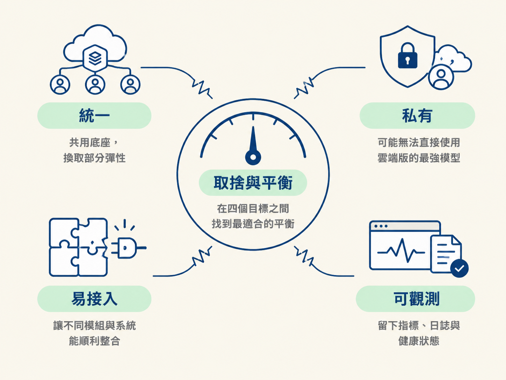
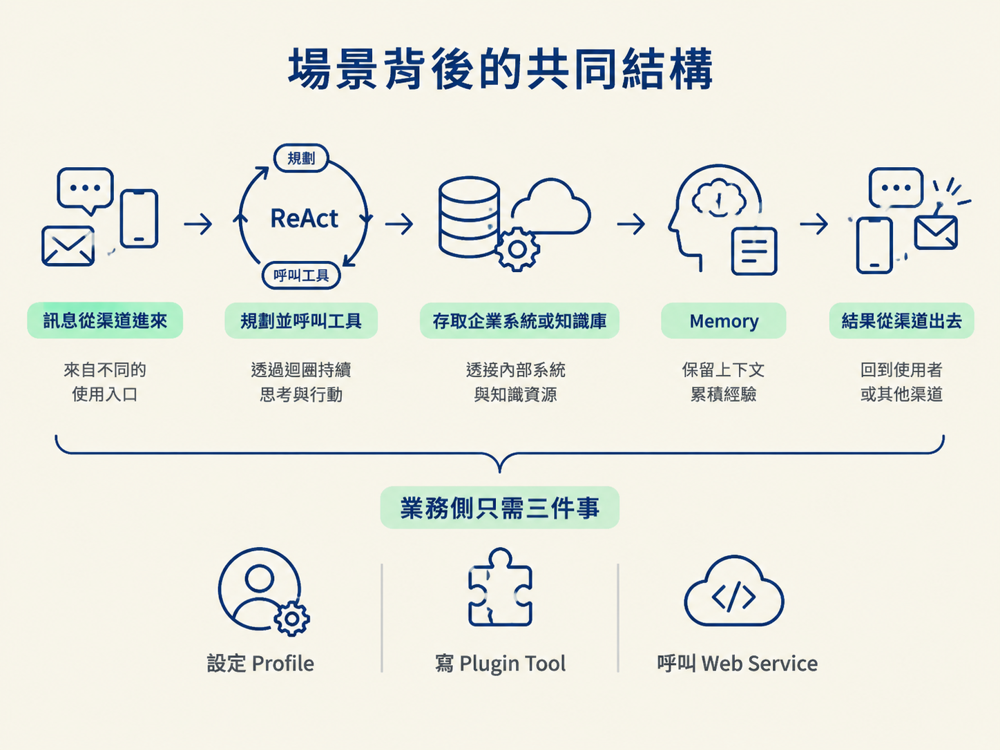

一個 Agent 底座真正有價值，不是因為它能在 Demo 裡回答問題，而是因為它能被不同業務重複使用，接進企業既有系統，並且在出錯時找得到原因。OryxOS 用四個設計目標定義這把尺，再用三個場景檢查這些能力組合起來後，是否真的能支撐業務。
學完這一節，你應該能說明「統一、私有、易接入、可觀測」四個設計目標各自解決什麼問題，也能用三個典型場景看出這些能力如何協同運作。
需求文件用四個詞，概括 OryxOS 的核心方向。它們不是掛在牆上的口號，而是每次做架構取捨時都能拿出來比較的四把尺。方案難分高下時，就看哪一個更符合這四個要求。
| 目標 | 意思 | 對應的工程要求 |
|---|---|---|
| 統一 | 多個業務 Agent 共用同一個底座 | 一套 Profile／渠道接入／模型路由／工具／記憶，服務多個 Agent |
| 私有 | 資料留在企業自己的基礎設施上 | 模型可接外部 API，也可接本地的 Ollama / vLLM |
| 易接入 | 用企業熟悉的方式接進來 | 標準 Spring Boot 結構，直接整合 ERP／CRM／CMDB／SSO／監控；工具用 MCP 或 Spring Bean |
| 可觀測 | 跑起來之後看得見 | Prometheus 指標、結構化 JSON 日誌、健康檢查、Web 儀表板 |
這四把尺必須一起看，因為它們經常互相拉扯。
例如，「私有」可能代表你不能直接使用只有雲端版本的最強模型；「統一」可能代表你要用共用底座換取部分單一 Agent 的彈性；「可觀測」則表示每個模組都得留下指標、日誌與健康狀態，不能只在 Demo 裡跑得通。
因此，設計決策不是單純追求某一項做到最大，而是在四個目標之間找到符合產品需求的平衡。

以下場景描述的是「目標形態」：五個能力都完成後，業務方會怎麼使用這個底座。核心階段會先交付 runtime kernel；這些完整場景則要等擴展階段完成後，才會完整成立。
運維團隊在企業微信裡問 Agent：「昨晚那台機器的告警怎麼回事？」
Agent 先透過渠道收到訊息，再呼叫監控告警介面查詢；接著讀取 runbook 知識庫，必要時執行自癒腳本，最後把處置建議回覆到群裡。
這個場景組合了渠道接入、Tool（企業系統）與 Memory（記住這次故障）。Memory 的價值在於，Agent 不必把每次故障都當成一個全新的問題，而能保留這次處置所需的上下文。
法務或業務在飛書裡問：「這份合約的違約條款怎麼寫的？有沒有跟去年那份衝突？」
Agent 檢索合約與法律知識庫，並且帶著引用出處回答。這裡的關鍵不只是「找得到答案」，還包括長期記憶與檢索品質，以及企業場景要求的可追溯性：使用者必須知道答案是根據哪份文件、哪段內容整理出來的。
業務在 CRM 裡問：「幫我整理明天要拜訪的客戶簡報。」
Agent 整合 CRM 的客戶資料、企查查的 MCP 工具查到的工商資訊，以及內部知識庫，最後輸出一份客戶簡報。
這個場景展示的是多個外部系統、MCP 工具與模型輸出如何組合。模型本身不是資料來源；它需要透過工具取得企業資料，再把不同來源整理成業務可以直接使用的結果。
三個場景表面上差很多：一個處理告警，一個查合約，一個準備銷售簡報。但拆開來看，底下其實是同一副骨架：
訊息從某個渠道進來 → ReAct 迴圈規劃並呼叫工具 → 工具存取企業系統或知識庫 → Memory 保留上下文 → 結果從渠道出去

業務方不需要知道底下拆成多少個模組。他們只需要設定一個 Profile、寫一個 Plugin Tool，再呼叫 Web Service。這就是「底座」的價值：場景不必各自打造一套系統，而是把既有能力重新組合。
因此，需求文件才會說：只要五個能力夠紮實，業務側要做的不過是三件事——設定 Profile、寫 Plugin Tool、呼叫 Web Service。這句話也是 OryxOS 分層哲學的縮影：複雜度留在共用底座，業務場景則用少量設定與接入工作完成。